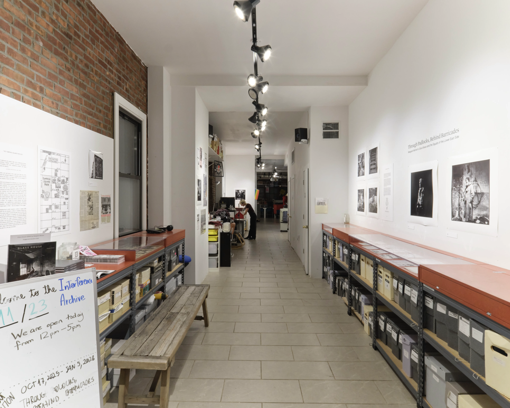
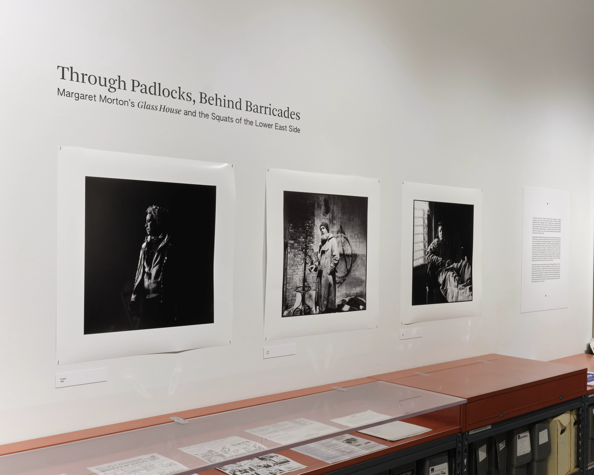

Through Padlocks, Behind Barricades
Interference Archive, October 2025 - January 2026
Interference Archive and the Margaret Morton Archive produced the following programming during the exhibition's run:
- Artists on Squatting: A Conversation Between Fly, Ash Thayer, and Seth Tobocman (November 11, 2025 – Moderated by Amy Starecheski)
- Archives, Displacement and the Struggle for Housing Rights: Lynn Lewis, Maggie Schreiner, and Cynthia Tobar (November 18th, 2025 – Moderated by Stephanie Neel)
- Film Screening: Survival Without Rent and Viva Loisaida!
Q&A with filmmakers Katie Heiserman and Elana Meyers (December 02, 2025 — Moderated by Justin Mugits) - Fragile Dwelling: Margaret Morton's documentation of New York's homeless communities
A talk by Bonnie Yochelson (January 03, 2026)
Special thanks to the following institutional archives and their staff, who helped us locate archival materials and facilitated their reproduction: Centro, the Center for Puerto Rican Studies, Hunter College; the Rare Book and Manuscript Library, Columbia University; and Tamiment Library and Robert F. Wagner Archives, New York University Special Collections.

